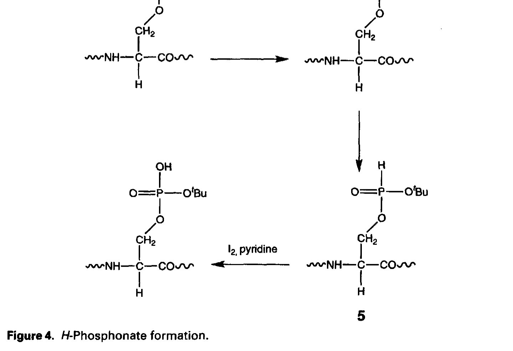
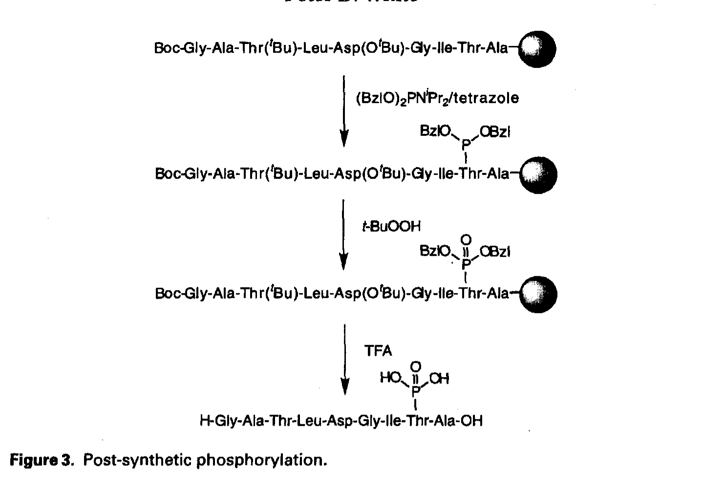
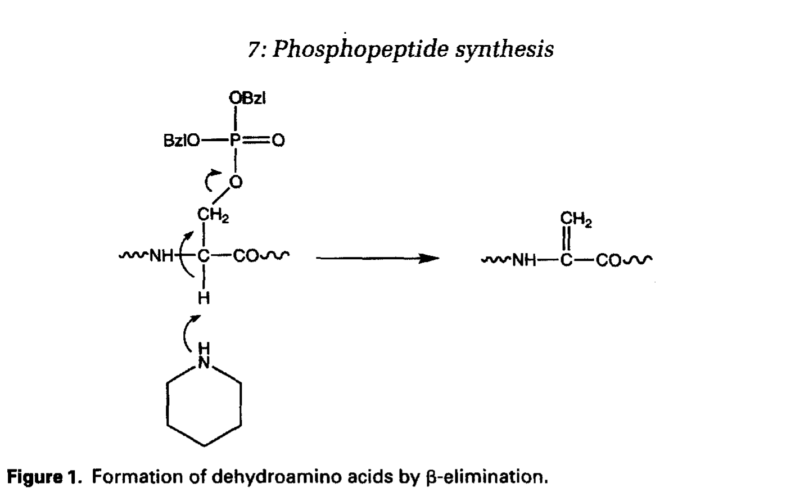
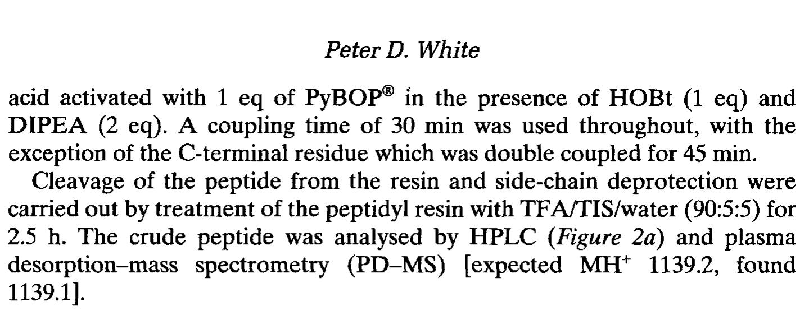
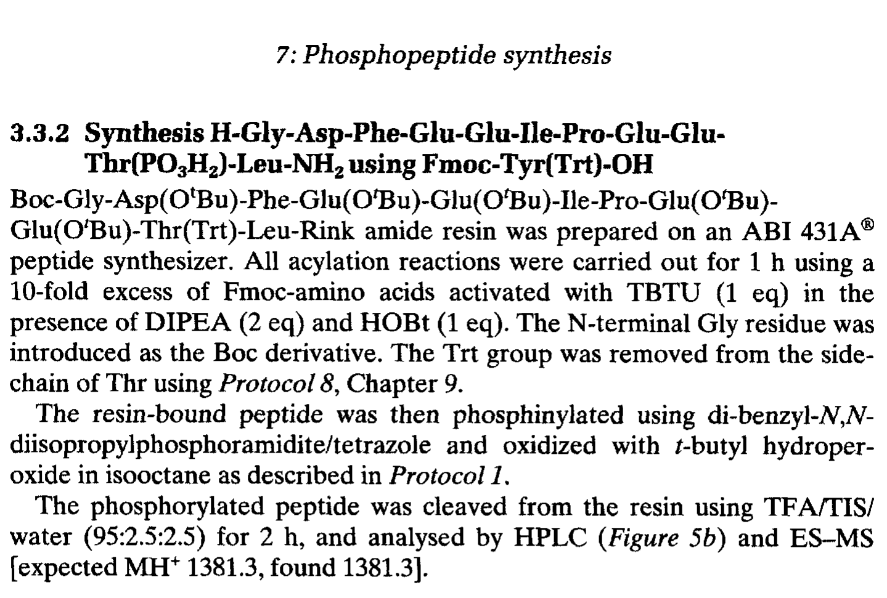

第七章 磷酸肽合成
Phosphopeptide Synthesis
作者：Peter D. White 书页：183–194
磷酸化（phosphorylation）是自然界中最重要、最普遍的蛋白质翻译后修饰（post-translational modification, PTM）之一。在哺乳动物细胞中，估计有超过 30% 的蛋白质在某一时刻处于磷酸化状态。磷酸化/去磷酸化循环由蛋白激酶（protein kinases）和蛋白磷酸酶（protein phosphatases）精密调控，调节着几乎所有的细胞过程，包括：
细胞信号传导（signal transduction）——受体酪氨酸激酶（RTK）通路、MAPK 级联等
基因表达调控——转录因子（如 STAT、CREB）的磷酸化激活
细胞代谢——糖酵解、糖原合成中的关键酶调控
细胞周期调控——cyclin-dependent kinases (CDKs) 的磷酸化
细胞凋亡（apoptosis）——Bcl-2 家族蛋白的磷酸化调控
磷酸化发生在三种羟基氨基酸残基上：丝氨酸（Ser, ~86%）、苏氨酸（Thr, ~12%）和酪氨酸（Tyr, ~2%）。磷酸化使残基分子量增加 79.966 Da（HPO₃），同时引入一个负电荷（pKa₁ ≈ 1.3, pKa₂ ≈ 6.7）。这一修饰可以改变蛋白质的构象、电荷分布、亲疏水性以及与其他分子的相互作用。
磷酸肽（phosphopeptide）的化学合成是研究和理解磷酸化生物学功能的核心工具。合成的磷酸肽可用于：（1）鉴定激酶的底物特异性和磷酸化位点（phosphorylation site mapping）；（2）制备磷酸化特异性抗体（phospho-specific antibodies）；（3）研究蛋白质-蛋白质相互作用（如 SH2、PTB 结构域识别）；（4）开发激酶抑制剂和磷酸酶抑制剂；（5）药物设计和疫苗开发。
在 Fmoc 固相多肽合成（Fmoc-SPPS）框架下，磷酸肽的合成面临独特的挑战：磷酸基团的引入时机、保护基策略、以及磷酸化氨基酸残基在合成条件下的稳定性。本章系统讨论了两大策略——构建块法（building block approach）和全局磷酸化法（global phosphorylation），以及与之相关的技术问题。
Fmoc-SPPS 合成磷酸肽主要有两种策略：构建块法（Building Block Approach）和全局磷酸化法（Global Phosphorylation）。选择哪种策略取决于目标磷酸肽的序列、磷酸化位点数量、构建块的可获性以及实验室条件。
构建块法是最直接、最广泛使用的磷酸肽合成策略。其核心思想是：使用预成型的磷酸化氨基酸衍生物作为 Fmoc-SPPS 的构建块，在固相合成过程中直接将磷酸化残基引入到肽链的指定位置。这样磷酸化位点完全由合成者控制，不存在选择性磷酸化的问题。
三种标准的磷酸化氨基酸构建块为：
Fmoc-pSer(PO₃Bzl)-OH —— 磷酸丝氨酸，磷酸基团以苄酯（benzyl ester）保护
Fmoc-pThr(PO₃Bzl)-OH —— 磷酸苏氨酸，磷酸基团以苄酯保护
Fmoc-pTyr(PO₃H₂)-OH —— 磷酸酪氨酸，磷酸基团无需保护（游离磷酸）
对于 pSer 和 pThr，磷酸基团有三个可质子化的氧原子，其中两个用酯键保护（一个用苄酯 Bzl 保护，另一个通过 P-O-C 键与氨基酸侧链碳相连）。磷酸基团的一个氧以 P=O 形式存在。苄酯保护基在 TFA 切割条件下（通常 90-95% TFA, 1-2 h）被去除，释放出游离磷酸基团。
对于 pTyr，磷酸基团以游离酸形式（PO₃H₂）存在。由于酪氨酸的芳香环共轭效应，P-O 键对酸条件稳定，无需额外保护。这使得 Fmoc-pTyr(PO₃H₂)-OH 的使用最为简便，在 SPPS 中与普通 Fmoc-Tyr-OH 行为相近。
优点：
磷酸化位点完全确定——每个磷酸化残基被精确放置在序列中的指定位置
操作简便——与标准 Fmoc-SPPS 流程完全兼容
适用范围广——单一位点或多位点磷酸化均可实现
副反应少——不存在非特异性磷酸化的风险
缺点：
构建块价格较高——尤其是 pSer 和 pThr 的苄酯保护衍生物
pSer/pThr 衍生物偶联效率可能偏低——磷酸基团较大的空间位阻（steric hindrance）
pSer/pThr 在碱性条件下存在 β-消除（β-elimination）风险——详见第 3 节
构建块溶解性有时较差——需要在 DMF 中使用助溶剂
由于磷酸基团的空间位阻效应，Fmoc-pSer(PO₃Bzl)-OH 和 Fmoc-pThr(PO₃Bzl)-OH 的偶联速率通常低于对应的非磷酸化氨基酸。以下策略可以有效克服这一问题：
使用更活泼的偶联试剂：HATU（六氟磷酸苯并三氮唑-1-基-氧基三吡咯烷基磷）优于 HBTU；PyBOP 也是不错的选择
双偶联（double coupling）：同一位置连续进行两次偶联反应，中间洗涤树脂
延长偶联时间：从标准的 1 小时延长至 2-4 小时
增加构建块过量：使用 3-5 当量而非标准的 2-3 当量
微波辅助合成（microwave-assisted SPPS）：在 40-60°C 下偶联可显著提高效率
使用更活泼的添加剂：如 Oxyma Pure 替代 HOBt
全局磷酸化法是一种替代策略：先使用标准 Fmoc-SPPS 合成含游离 Ser/Thr（侧链不保护）的肽树脂，然后在液相或固相上对肽进行化学磷酸化。这种方法不需要昂贵的磷酸化氨基酸构建块，但需要额外的磷酸化步骤。
这是最早发展起来的全局磷酸化方法之一，由 Bannwarth 和同事开发。基本步骤如下：
步骤 1：合成含游离 Ser/Thr 的肽（侧链不保护），仍连接在树脂上或已切割到溶液中
步骤 2：用二苄基磷酰氯（dibenzyl phosphorochloridate, (BnO)₂P(O)Cl）处理，在碱（如 DIPEA）存在下对游离羟基进行磷酰化
步骤 3：催化氢化（H₂/Pd-C）去除苄基保护基，释放出游离磷酸基团
此方法的局限在于：（1）催化氢化需要特殊的反应装置；（2）氢化条件可能与含 Cys、Met 的肽不兼容；（3）如果肽中有多个 Ser/Thr，磷酰化缺乏位点选择性，可能导致非目标位点的磷酸化。

Figure 4. H-膦酸酯 (H-phosphonate) 的形成与氧化转化为磷酸酯
H-膦酸酯法是一种更精巧的全局磷酸化策略。该方法利用亚磷酸酯化学（P(III) chemistry），通过以下步骤实现磷酸化：
步骤 1：合成含游离 Ser/Thr 的肽树脂
步骤 2：用亚磷酰胺试剂（phosphoramidite reagent）处理，形成 H-膦酸酯中间体（H-phosphonate）
步骤 3：用碘/水氧化（oxidation, I₂/H₂O）将 P(III) 转化为 P(V) 磷酸酯
H-膦酸酯法的主要优势是反应条件温和，与 Fmoc 保护基策略兼容。磷酸化可以在树脂上进行（on-resin phosphorylation），避免了液相反应的溶解度问题。然而，多位点磷酸化的选择性仍然是一个挑战——所有游离的 Ser/Thr 都可能被磷酸化。
优点：
不需要昂贵的磷酸化氨基酸构建块——成本更低
磷酰化试剂相对便宜且易得
缺点：
多位点磷酸化问题——缺乏位点选择性
需要游离 Ser/Thr（侧链不保护），但在 SPPS 中某些序列需要保护
Asp(OtBu)-Ser 序列中的天冬酰亚胺（aspartimide）形成风险
额外的磷酸化步骤增加了操作复杂性
在全局磷酸化法中，目标 Ser/Thr 的侧链不保护（游离 -OH）。然而，当序列中存在 Asp(OtBu)-Xxx-Ser（即 Asp 后紧跟需要磷酸化的 Ser）时，在 Fmoc 脱保护（哌啶处理）过程中，Asp 的 α-羧基被活化，与下游残基的酰胺氮形成环状天冬酰亚胺（aspartimide）。这会导致序列缺失和副产物。
解决方案是在 Asp 前一个残基引入 Hmb（2-羟基-4-甲氧基苯甲基）保护基。Hmb 通过形成可逆的伪脯氨酰（pseudoproline）样结构，阻止了 Asp α-羧基的分子内环化。Hmb 在 TFA 切割时被去除。类似地，Dmb（2,4-二甲氧基苯甲基）也可用于同一目的。

Figure 3. 合成后磷酸化 (post-synthetic phosphorylation) 策略示意图

Figure 1. 脱氢氨基酸 (dehydroalanine / dehydroaminobutyric acid) 通过 β-消除反应形成
β-消除（β-elimination）是磷酸丝氨酸和磷酸苏氨酸在构建块法中面临的最主要的化学风险。其机理如下：在碱性条件下（如哌啶脱 Fmoc 保护时）或强酸条件下（如 TFA 切割时），pSer 或 pThr 的 Cα-H 被碱夺取（或被酸催化断裂），同时磷酸基团作为离去基团（leaving group）从 Cβ 位离去，形成 α,β-不饱和的脱氢氨基酸——脱氢丙氨酸（dehydroalanine, DhA）或脱氢氨基丁酸（dehydroaminobutyric acid, DhB）。
β-消除的机理要点：
反应类型：E1cb（共轭碱消除）——碱首先夺取 Cα-H，形成碳负离子中间体
离去基团：磷酸基团（HPO₃²⁻）是一个极好的离去基团，比 -OH 更容易离去
产物：脱氢丙氨酸（来自 pSer）或脱氢氨基丁酸（来自 pThr），含 C=C 双键
后续反应：脱氢氨基酸可与亲核试剂（如巯基、氨基）发生 Michael 加成，产生各种加成副产物
影响 β-消除的因素：
碱的强度和处理时间——哌啶（pKa ≈ 11.2）浓度越高、处理时间越长，β-消除越严重
温度——升高温度加速 β-消除
序列环境——pSer/pThr 后面（C 端方向）是 Gly 时更容易消除（Gly 的 Cα-H 更酸性）
pSer > pThr——pSer 比 pThr 更容易发生 β-消除（Thr 多一个甲基，空间位阻更大）
预防和减少 β-消除的策略：
缩短哌啶处理时间：从标准的 2 × 5 min 减少为 2 × 3 min 或 1 × 5 min + 1 × 2 min
使用 DBU 替代部分哌啶：DBU（1,8-二氮杂双环[5.4.0]十一碳-7-烯）是更温和的碱，可有效脱除 Fmoc 同时减少 β-消除。常用 2% DBU in DMF
低温操作：在 0-4°C 进行哌啶脱保护可减缓 β-消除
使用 pTyr 替代——pTyr 不会发生 β-消除（磷酸基团连接在芳香环上，无 β-氢）
切割条件优化：使用低浓度 TFA 或缩短切割时间
磷酸肽的分析和纯化与普通肽有一些重要区别。磷酸基团的引入改变了肽的物理化学性质，需要相应调整分析策略。
磷酸化使肽的亲水性增加（磷酸基团在生理 pH 下带负电荷），在反相 HPLC（RP-HPLC）中表现为：
保留时间（retention time）缩短——磷酸化肽比其非磷酸化对应物更早洗脱
峰形可能变宽——多个磷酸化异构体或磷酸基团的不同质子化状态
建议使用含 TFA 的乙腈梯度（0.1% TFA in water → 0.1% TFA in ACN）

Figure 2. 磷酸肽粗品的分析型 HPLC 色谱图（构建块法合成）
质谱（mass spectrometry, MS）是确认磷酸肽身份的关键手段。每个磷酸化残基使分子量增加约 80 Da（HPO₃ = 79.966 Da）。在 ESI-MS 或 MALDI-MS 中需要注意：
磷酸肽在负离子模式下检测效果更好（因磷酸基团的酸性）
MS/MS 中磷酸化残基可能发生中性丢失（neutral loss of H₃PO₄, 98 Da）
pSer/pThr 在 CID（碰撞诱导解离）中容易通过 β-消除丢失 HPO₃（80 Da）
推荐使用 ETD（电子转移解离）碎片化模式——更好保留磷酸化修饰

Figure 5. 磷酸肽粗品的分析型 HPLC 色谱图（全局磷酸化法合成）
磷酸肽的制备纯化通常使用半制备型 RP-HPLC。需要注意：含 pSer/pThr 的磷酸肽在酸性条件（低 pH）下更稳定，应避免长时间暴露到高 pH 环境中以防 β-消除。收集的馏分应立即中和到 pH 7-8，然后冷冻干燥（lyophilization）。
对于含有多个磷酸化位点的肽，还可以考虑使用 IMAC（固定化金属亲和色谱）或 TiO₂ 富集磷酸肽，利用磷酸基团对金属离子的强亲和力实现选择性分离。
以 Fmoc-pSer(PO₃Bzl)-OH 为例的标准偶联条件：
树脂：Rink Amide MBHA（制备受 C 端酰胺的肽）或 Wang 树脂（游离酸）
脱 Fmoc：20% 哌啶 in DMF, 3 min + 7 min（对 pSer/pThr 缩短第一次为 3 min）
偶联：Fmoc-pSer(PO₃Bzl)-OH (3 eq.), HATU (2.9 eq.), DIPEA (6 eq.), DMF, 1-2 h
双偶联：如果 Kaiser 茚三酮检测（ninhydrin test）为阳性（蓝色），重复偶联一次
后续残基正常偶联：Fmoc-AA-OH (3 eq.), HBTU/DIPEA 或 HATU/DIPEA, 45-60 min
磷酰氯法的标准条件：
合成含游离 Ser/Thr 的肽树脂（侧链不保护）
溶胀树脂于无水 DCM 中
加入 (BnO)₂P(O)Cl (5-10 eq.) + DIPEA (10 eq.) in DCM, 反应 2 h, 室温
DCM 洗涤 × 5, DMF 洗涤 × 3
切割（TFA cocktail）获得 N-乙酰保护的中间体
催化氢化（H₂/Pd-C）去除苄基，获得游离磷酸肽
注意：全局磷酸化后可能需要额外的 HPLC 纯化以分离磷酸化和非磷酸化产物。
含 pSer/pThr 的肽在 TFA 切割时需要特别注意，避免 β-消除：
标准切割液：TFA/TIS/H₂O (95:2.5:2.5), 室温, 1-2 h
对于含多个 pSer/pThr 的肽：考虑降低 TFA 浓度或缩短切割时间
避免使用强酸清除剂如 thioanisole——可能促进副反应
切割后立即用冰冷乙醚沉淀——快速稀释 TFA
冻干后储存于 -20°C，避免反复冻融
磷酸化是最重要的 PTM 之一，磷酸肽合成对研究磷酸化生物学至关重要
两大策略：构建块法（精确但昂贵）vs 全局磷酸化法（经济但选择性差）
构建块法使用 Fmoc-pSer(PO₃Bzl)-OH、Fmoc-pThr(PO₃Bzl)-OH、Fmoc-pTyr(PO₃H₂)-OH
pSer/pThr 的磷酸基团用苄酯保护，TFA 可去除；pTyr 无需保护
pSer/pThr 偶联效率低→用 HATU、双偶联、微波辅助克服
β-消除是 pSer/pThr 的主要风险→缩短哌啶时间、用 DBU 替代
磷酸化使肽在 RP-HPLC 上保留时间缩短；MS 中分子量增加 ~80 Da
切割含 pSer/pThr 的肽需温和条件，避免 β-消除
全局磷酸化中 Asp-Ser 序列需引入 Hmb 保护以防天冬酰亚胺形成
IMAC 或 TiO₂ 可用于磷酸肽的选择性富集和纯化